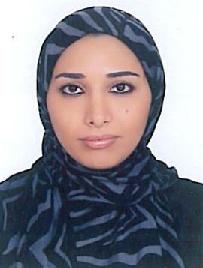

|
|
|
نام: یاس بانو میر جلالی
سمت: کارشناس معماری داخلی
تحصیلات:مدرك معماري داخلي و دكوراسيون دانشگاه تهران
ديپلم نقاشي و طرا حي از Cavendish Callege انگلستان
|
 |
خلاصه سوابق حرفهای
یاس بانو میرجلالی متولد سال 1360 در تهران می باشد. او دوران دبیرستان را در دبیرستان نرجس سپري
کرد و در مقطع کارشناسی موفق به اخذ مدرك در رشته ي زیست شناسی از دانشگاه آزاد اسلامی تهران
شد. وي تحصیل را در رشته هاي هنري ادامه داد تا جایی که مدرك معماري داخلی و دکوراسیون را از
پردیس هنرهاي زیب اي دانشگاه تهران دریافت کرد. سپس براي ادامه تحصیل به انگلستان سفر کرد. او در
انگلستان مدرك دیپلم رشته ي طراحی و نقاشی کوندیش کالج انگلستان را تحصیل نمود. وي هم اکنون در
عرصه ي معماري داخلی و دکوراسیون پروژه هاي مسکونی فعالیت دارد و توانسته چندین پروژه در داخل و
خارج از کشور را به سرانجام برساند.
|
- متخصص در طراحی معماری داخلی و دکوراسیون
- تجربه کار در پروژه های بین المللی
|
مهارت های تخصصی و کلیدی
- طراحي معماري دا خلي و دكوراسيون پروژه هاي مسكوني
- طراحي معماري داخلي و دكوراسيون پروژه هاي اداري، تجاري و كلينيك ها ي پزشكي
|

|
منتخب پروژه ها
- پروژه هاي مسكوني در ايران و فرانسه
- كلينيك هاي پزشكي در ايران
- همكاري در پروژه ساختمان هاي سفارت فرانسه به سرپرستي دكتر محمود حائري زاده
|

|
|